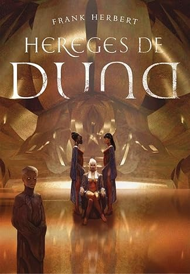

Hereges de Duna
Frank Herbet
★
★
★
★
★
Sinopse
Mais de mil anos após a liderança do Imperador Deus Leto II, o planeta Rakis está em ruínas. Do deserto ao verde fértil e de volta à aridez, o mundo completou um ciclo e foi abandonado por milhões de habitantes, que por milênios tiveram suas ambições destruídas. Agora, o povo da Dispersão está retornando dos lugares mais distantes do universo, dividido em facções que buscam poder sobre o que restou do Império. Em meio a essas mudanças, as Bene Gesserit encontram uma garota chamada Sheeana, que possui as habilidades dos Fremen. Essa garota, que causa furor religioso e pode realizar uma antiga profecia, tem o potencial de ser uma peça-chave para o destino da humanidade.